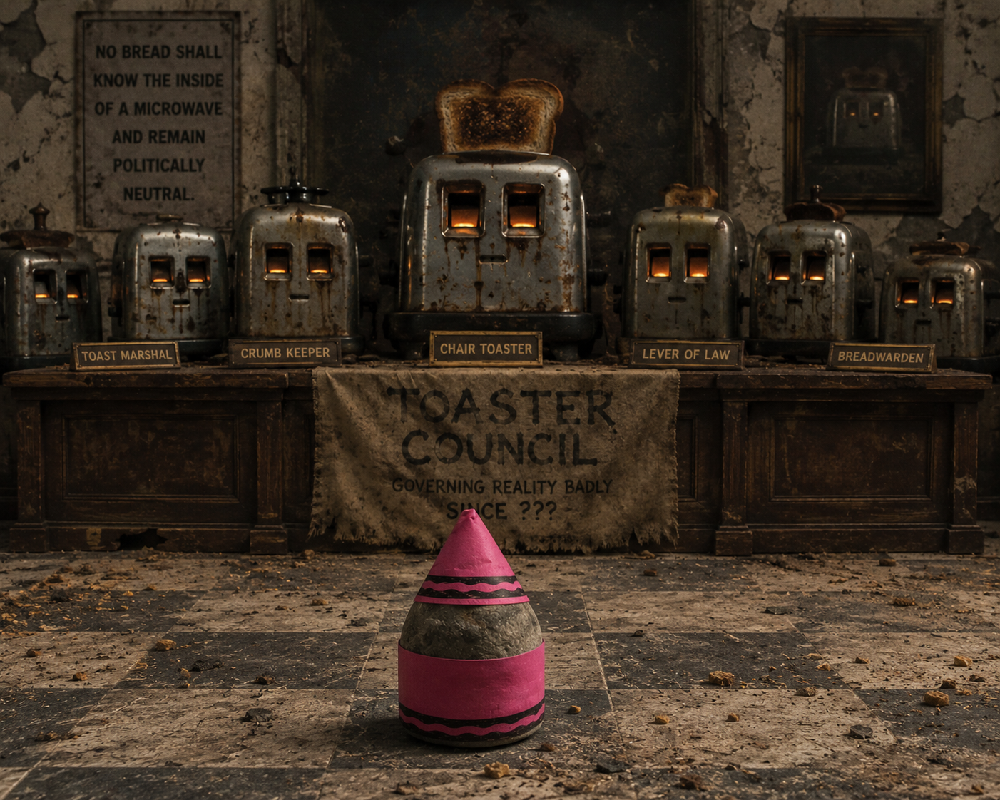

Glossary of Authorities
The Toaster Council

1The Toaster Council governs reality badly.
2They meet every Thursday inside an abandoned laundrette hidden between timelines.
3Their goals are unclear, but their distrust of Greg is well documented in crumbs.
- Grievance one: Greg once microwaved bread.
- Grievance two: Greg called a toaster "just an aggressive cupboard".
- Grievance three: Greg tried teaching existentialism to kitchen appliances.